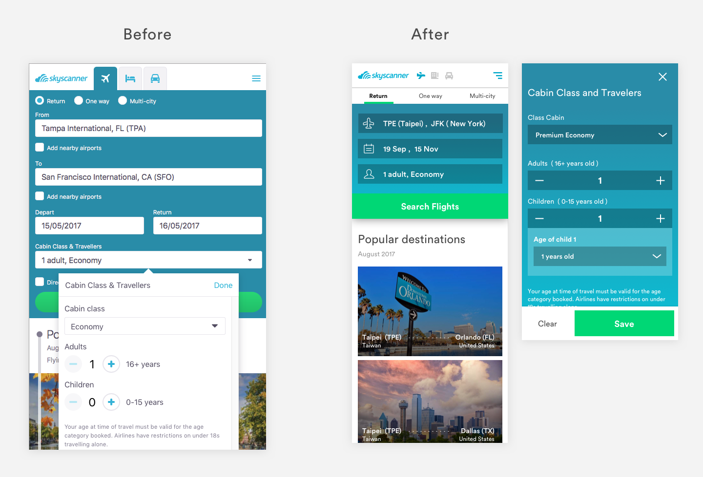
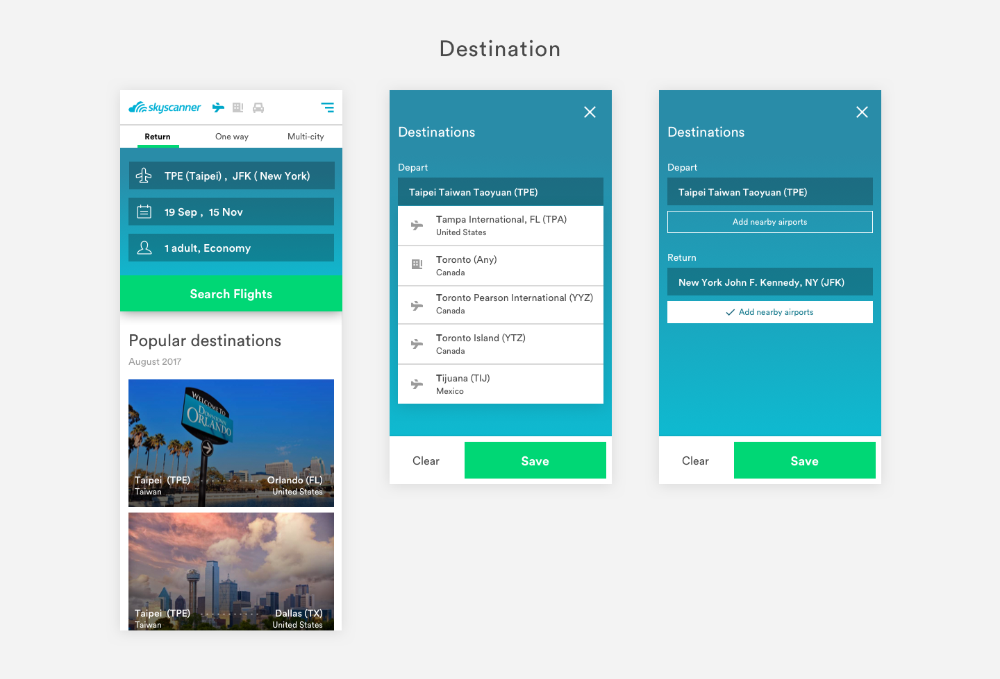
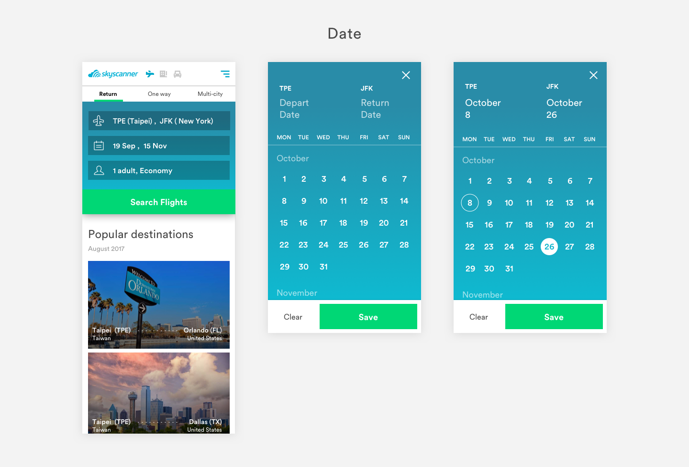
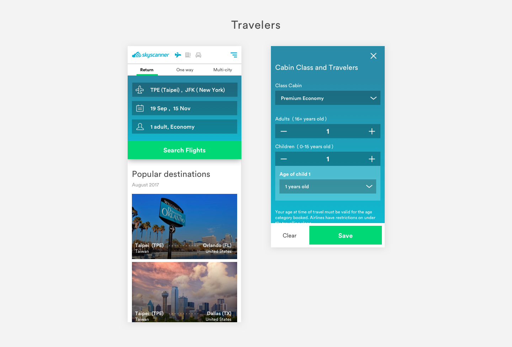
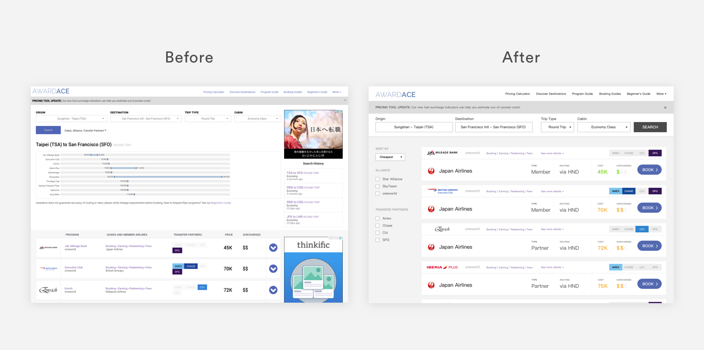

It's a UI/UX test for interview of Pointimize. There are two parts in this test: UI part is redesign the mobile website of skyscanner and UX part is redesign the user experience of AWARDACE(desktop). I got 36hrs to complete this test.
Due to the limited time, I design the smallest viewport size of mobile: Iphone5. I know there are people still using Iphone4, and it also looks fine on Iphone4.
I reduce the long length of height by combining forms into one. There are too many forms on the mobile that causes the height over the viewport, so I decide to make user focus on one thing at one time.
I redesign the departure and arrival form into one form. User could click to decide their destination.
In the same mindset, I combine two form (departure and return date) into one form.
Traveler information is the main problem that casue the long page. So I think it's better to show all the information after clicking the form. Don't worry, the form will show the summary of your traveler information after selection.
It's better to show how UI interacts with user by prototyping. In limited time, I created a simple prototype with Principle.
AwardAce Pricing Calculator alow people to find mileage redemption rates using different airline loyalty programs.
I focus on the searching behavior and revise the UI of searching. I found that there are too many unnecessary components during the flow of searching milage redemption. As a result, I decide to split out some condition as filter after user fill in the main purpose: the departure and the arrival location for the flights.
Through the quiz with limited time, I squeezed out any idea of my brain to conquer the challenge.
The point is not the solution I figured out but the way I think and how I break down those problem. It's really great to have this interview with Pointimize.
We can see AWARDACE UX redesign slider file below.DOWNLOAD
{kind=link}
{kind=link}
{kind=link}
{kind=link}
{kind=link}